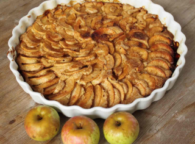
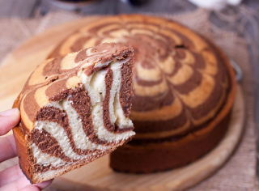
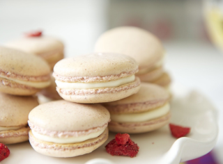
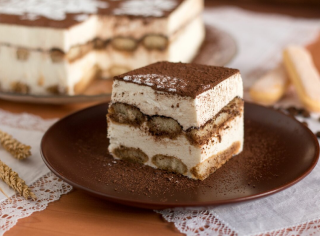

Десерты

Быстро
Шарлотка с яблоками
Рецепт классической шарлотки с яблоками, из 5 ингредиентов. Шарлотка – простой и вкусный
яблочный пирог, который буквально тает во рту, а готовится это объедение очень быстро.

Пирог "Зебра"
Простой и очень вкусный пирог "Зебра". Испеките его на выходных и порадуйте свою семью
вкусной выпечкой к чаю.

Блюда стран мира
Домашние макаронс
Чудесный французский десерт у себя на кухне! Макаронс - известные пирожные из белков,
сахара, миндальной муки и нежного крема. Приготовить их сложно, но реально, особенно
если
точно следовать технологии. Этот рецепт макаронс на основе французской меренги.

Блюда стран
мира
Классический тирамису
Предлагаю рецепт вкусного, изысканного и нежного десерта тирамису (tiramisu), который
можно
сделать порционно или в одной большой ёмкости. Торт "Тирамису" очень легко приготовить,
а
съедается он мгновенно.